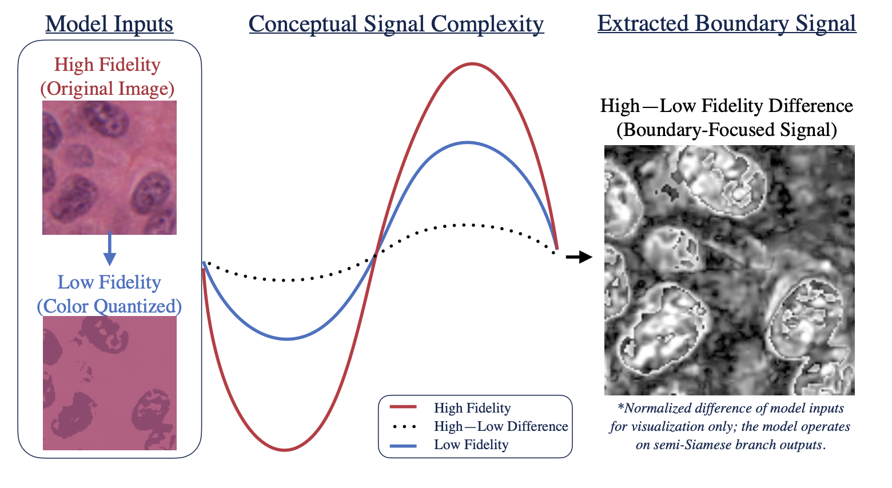
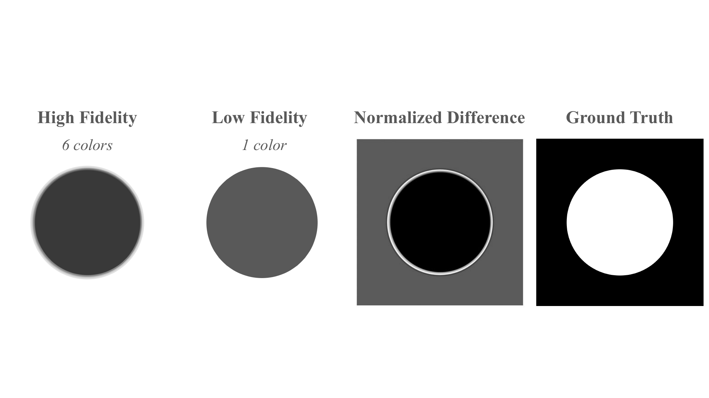
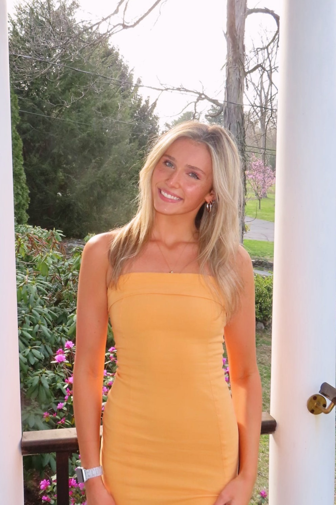

PORTFOLIO

Hailey Reed
Computer Vision Researcher
M.S. Computer Science Student, NYU Courant
PORTFOLIO
Computer Vision Researcher
M.S. Computer Science Student, NYU Courant
DeltaSegment is a computer vision framework for medical image segmentation that reframes segmentation as a change-detection problem. The project was motivated by a common challenge in biomedical imaging: obtaining large, high-quality annotated datasets is expensive and time-consuming.
Rather than relying solely on fully annotated medical images, DeltaSegment leverages paired high-fidelity and low-fidelity image representations. Low-fidelity images are generated through color quantization and paired with their original counterparts. A Semi-Siamese U-Net architecture learns differences between these representations and uses those differences as a boundary-aware signal for segmentation.
This approach enables more data-efficient learning and encourages the model to focus on structural information rather than appearance alone.
DeltaSegment was evaluated on several widely used histopathology segmentation datasets, including:
The framework demonstrated consistent improvements over strong convolutional and transformer-based segmentation baselines while maintaining strong performance in small-data settings.
The project explored:
Niu, Y., Reed, H. A., & Yang, Q. (2026). DeltaSegment: Multifidelity Medical Image Segmentation via Change Detection. Proceedings of the 2026 IEEE 23rd International Symposium on Biomedical Imaging (ISBI 2026). DOI: 10.1109/ISBI61048.2026.11515780
IEEE International Symposium on Biomedical Imaging (ISBI 2026)
London, United Kingdom
This work was presented at ISBI 2026, one of the premier conferences in biomedical imaging and medical image analysis. The conference provided an opportunity to share the research with the international medical imaging and computer vision community.

Following my work on DeltaSegment and multifidelity medical image segmentation, I became interested in a broader question: what is the most effective way to incorporate multifidelity information into deep learning architectures for segmentation?
This thesis extends the original DeltaSegment framework by exploring multiple architectural approaches for modeling relationships between high-fidelity and low-fidelity image representations. Rather than focusing on a single network design, the project investigates how multifidelity information can be integrated at different stages of the segmentation pipeline and evaluates the strengths and limitations of each approach.
I designed and evaluated several novel architectures that incorporate multifidelity information in different ways:
Models were trained and evaluated using extensive cross-validation on multiple biomedical image segmentation datasets. Hyperparameter optimization was performed using ASHA-based random search, and performance was assessed using Dice and F1 metrics.

This project focuses on real-time GDP nowcasting using the FRED-MD panel of 126 monthly macroeconomic indicators, addressing the delay between economic activity and official GDP releases. Rather than relying solely on covariance-based statistical models, the work explores how neural network architectures can learn temporal dependencies, distinguish leading from lagging indicators, and adapt to realistic forecasting constraints.
I implemented and evaluated multiple neural forecasting models, including MLPs, CNNs, RNNs, LSTMs, and GRUs, using carefully constructed input sequences and real-time information sets that reflect data availability within each target quarter. Model performance is assessed under both stable and turbulent economic regimes and benchmarked against a naive persistence model and a Dynamic Factor Model (DFM). Results show that model effectiveness is highly regime-dependent, motivating adaptive or ensemble-based forecasting strategies rather than reliance on a single architecture.
In parallel, I designed and built an interactive Plotly Dash dashboard that integrates data preprocessing, sequence construction, and model evaluation into a unified visualization framework. The dashboard enables users to explore indicator behavior, examine leading versus lagging dynamics, and compare model predictions across economic conditions. This work was developed as part of a graduate-level Data Visualization and Communication course, and an accompanying paper documents the full pipeline, methodological choices, and insights from the visualization-driven analysis.
Data Visualization Paper
LitheVision is an early-stage computer vision startup developing robust, learning-based visual inspection systems for manufacturing quality control. Its core system is built on a Siamese-style deep learning architecture for change detection, enabling direct comparison between nominal (reference) and observed states while remaining resilient to environmental variation. By combining this architecture with multi-modal image analysis, LitheVision identifies subtle defects and anomalies that traditional rule-based inspection systems often miss, particularly under variable lighting, camera angles, and material conditions.
The project was developed through Accelerate UConn, the University of Connecticut’s National Science Foundation Innovation Corps (NSF I-Corps) program, where my partner and I conducted extensive customer discovery, validated market need, and refined the technical and commercial problem space through direct interviews with manufacturers and industry stakeholders.
LitheVision is currently advancing from technical validation to commercialization and is preparing a formal venture submission for the Rice Business Plan Competition, focusing on scalable deployment of AI-powered inspection tools that reduce reliance on manual inspection while improving reliability and consistency in high-stakes manufacturing environments.
LitheVision WebsiteThe NSF I-Corps Propelus Program is a prestigious initiative funded by the National Science Foundation to help academic researchers evaluate the commercial potential of their technologies. As a participant in Cohort 32 of the Northeast Hub, I received training in customer discovery, value proposition development, and go-to-market strategy alongside early-stage researchers and entrepreneurs.
Through this program, I conducted dozens of interviews with industry professionals and potential customers, refining our understanding of real-world pain points and validating market need for LitheVision, our AI-driven quality control system.
This experience provided me with a strong foundation in entrepreneurial thinking, technology translation, and early-stage venture development.
NSF I-Corps

Enables autonomous spatial disentanglement of lattice-dominated scanning transmission electron microscopy (STEM) images using a rotationally invariant variational autoencoder (rVAE).
View Submission →
Implements the Balanced Random Forest (BRF) algorithm to detect fraudulent transactions in highly imbalanced datasets. Uses balanced bootstrapping and unpruned decision trees to improve sensitivity to minority class instances while maintaining strong overall performance.
View on GitHub →Applies imbalance-aware ensemble learning to predict 30-day hospital readmissions in the Diabetes-130 clinical dataset. Demonstrates that Balanced Random Forest improves minority-class F1 performance over standard prior SOTA approaches while remaining grounded in real patient data.
View Submission →
A pipeline of pretrained modules for text-to-image generation using CLIP embeddings, U-Net denoising, and VAE decoding. Demonstrates the power of combining transformer-based language models with diffusion-based image generation.
View on GitHub →
Explores and visualizes classic search algorithms including BFS, DFS, UCS, Greedy Best-First Search, and A*. Interactive visualization shows traversal paths across a map of Romania to analyze efficiency and behavior.
View on GitHub →
This portfolio was built using HTML, JavaScript, and CSS, with additional visuals designed in Canva. I created this site to showcase my projects and skills in a more interactive and accessible way than a traditional resume or GitHub page.
LitheVision UI: I also created the front end for the LitheVision website, which you can find in the project section above or visit directly at https://www.lithevision.org/.

Hi! I'm Hailey Reed, an incoming M.S. student in Computer Science at NYU Courant. I recently graduated from the University of Connecticut with a B.S. in Computer Science and a minor in Mathematics. During my time at UConn, I was a member of the University Honors Program and the STEM Scholar Community, worked as a tutor in the Computer Science & Engineering Help Center, and became deeply involved in research spanning computer vision, medical imaging, entrepreneurship, and quantitative finance.
My primary interests lie at the intersection of machine learning, computer vision, and medical imaging, particularly in developing data-efficient methods for real-world applications. As I begin my M.S. at NYU Courant, I am excited to continue pursuing research opportunities in AI while exploring new applications in quantitative finance and computational modeling.